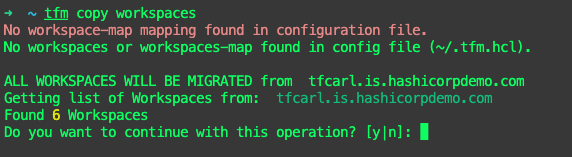
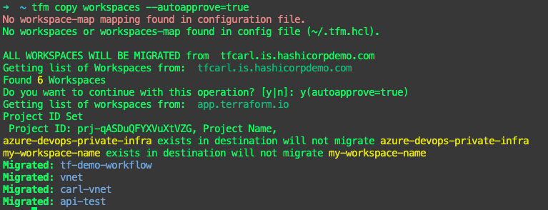
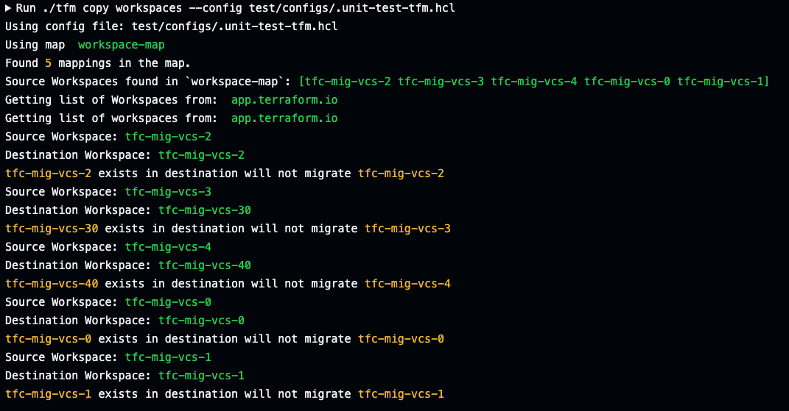

tfm copy workspaces
tfm copy workspaces or tfm copy ws creates a workspaces from source to destination org.
After the workspaces are created at the destination, the next step is to copy the rest of the workspaces settings such as state, variables, team access, remote state sharing etc using tfm copy workspace flags.
tfm copy workspaces -h
Copy Workspaces from source to destination org
Usage:
tfm copy workspaces [flags]
Aliases:
workspaces, ws
Flags:
--add-prefix string (optional) Only performed on destination workspaces, adds a prefix, if missing.
--add-suffix string (optional) Only performed on destination workspaces, adds a suffix, if missing.
--agents Mapping of source Agent Pool IDs to destination Agent Pool IDs in config file
--consolidate-global Consolidate global remote state sharing settings. Must be used with --remote-state-sharing flag
--create-dst-project Creates destination project, if not existing. Defaults to source organization name.
-h, --help help for workspaces
-l, --last int Copy the last X number of state files only.
--lock Lock all source workspaces
--plan-only Only plan the copy operation without making changes
--remote-state-sharing Copy remote state sharing settings
--run-triggers Copy workspace run triggers
--skip-sensitive-vars Skip copying sensitive variables. Must be used with --vars flag
--ssh Mapping of source ssh id to destination ssh id in config file
--state Copy workspace states
--teamaccess Copy workspace Team Access
--unlock Unlock all source workspaces
--vars Copy workspace variables
--vcs Mapping of source vcs Oauth ID or GitHub App ID to destination vcs Oauth or GitHub App ID in config file
--workspace-id string Specify one single workspace ID to copy to destination
Global Flags:
--autoapprove Auto approve the tfm run. --autoapprove=true . false by default
--config string Config file, can be used to store common flags, (default is ~/.tfm.hcl).
--json Print the output in JSON format
Copying Workspaces
Copy ALL workspaces
Without providing any flags, tfm copy workspaces will copy all source workspaces and create them in the destination organization.
Users will be required to confirm all workspaces is the desired operation if no workspaces or workspaces-map is not found in tfm config file (eg ~/.tfm.hcl).

To automate the confirmation, the flag --autoapprove=true can be provided during a tfm run.

Copy a list of workspaces
Note: Only use one of the following:
workspaces,exclude-workspaces, orworkspaces-map.
As part of the HCL config file (/home/user/.tfm.hcl), a list of workspaces from the source TFE can be specified. tfm will use this list when running tfm copy workspaces and ensure the workspace exists or is created in the target.
#List of Workspaces to create/check are migrated across to new TFC
"workspaces" = [
"appAFrontEnd",
"appABackEnd",
"appBDataLake",
"appBInfra"
]
Exclude a list of workspaces
Note: Only use one of the following:
workspaces,exclude-workspaces, orworkspaces-map.
As part of the HCL config file (/home/user/.tfm.hcl), a list of workspaces to exclude from the source TFE can be specified. tfm will use this list when running tfm copy workspaces and ensure the workspace is skipped when copying.
Rename Workspaces in destination during a copy
Using Workspaces-Map Configuration
Note: Only use one of the following:
workspaces,exclude-workspaces, orworkspaces-map.
As part of the HCL config file (/home/user/.tfm.hcl), a list of source-workspace-name=destination-workspace-name can be provided. tfm will use this list when running tfm copy workspace to look at all workspaces in the source host and rename the destination workspace name.
Note: Using the 'workspaces-map' configuration in your HCL config file will take precedence over the other 'workspaces' list feature which only lists source workspace names.
# A list of source=destination workspace names. TFM will look at each source workspace and recreate the workspace with the specified destination name.
"workspaces-map"=[
"tfc-mig-vcs-0=tfc-mig-vcs-0",
"tfc-mig-vcs-1=tfc-mig-vcs-1",
"tfc-mig-vcs-2=tfc-mig-vcs-2",
"tfc-mig-vcs-3=tfc-mig-vcs-30",
"tfc-mig-vcs-4=tfc-mig-vcs-40",
]

Using Prefix and/or Suffix
When migrating workspaces, if wanting to add a prefix and/or suffix to the name, add the following to the command:
--add-prefix and/or --add-suffix.
For example tfm copy workspaces --add-prefix alpha --add-suffix dev
-
If the workspace is
frontend, it will create it on the destination asalpha-frontend-dev. -
If the workspace was named
alpha-frontend, it will only add the suffix-dev. -
If the workspace was
frontend-dev, it will only add the prefixalpha-.
Example output:
**** Standardizing workspace names with prefix and suffix ****
Renaming workspace: bravo-dev -> id-bravo-dev
Renaming workspace: charlie -> id-charlie-dev
Renaming workspace: id-delta -> id-delta-dev
Existing Workspaces in Destination
Any existing workspaces in the destination will be skipped.

Copy Workspaces into Projects
By default, a workspace will be copied over to the Default Project in the destination (eg TFC).
Users can specify the project ID for the desired project to place all workspaces in the tfm copy workspace run.
Utilize tfm list projects --side destination to determine the project id.
Set either the environment variable:
or specify the following in your ~/.tfm.hcl configuration file.
Create New Project During Copy
Runs if --create-dst-project is specified.
Checks if the destination project exists. It will attempt to create a project, as long as the name is at least 3 characters long and no more than 40 characters.
By default, it will attempt to utilize the source organization name.